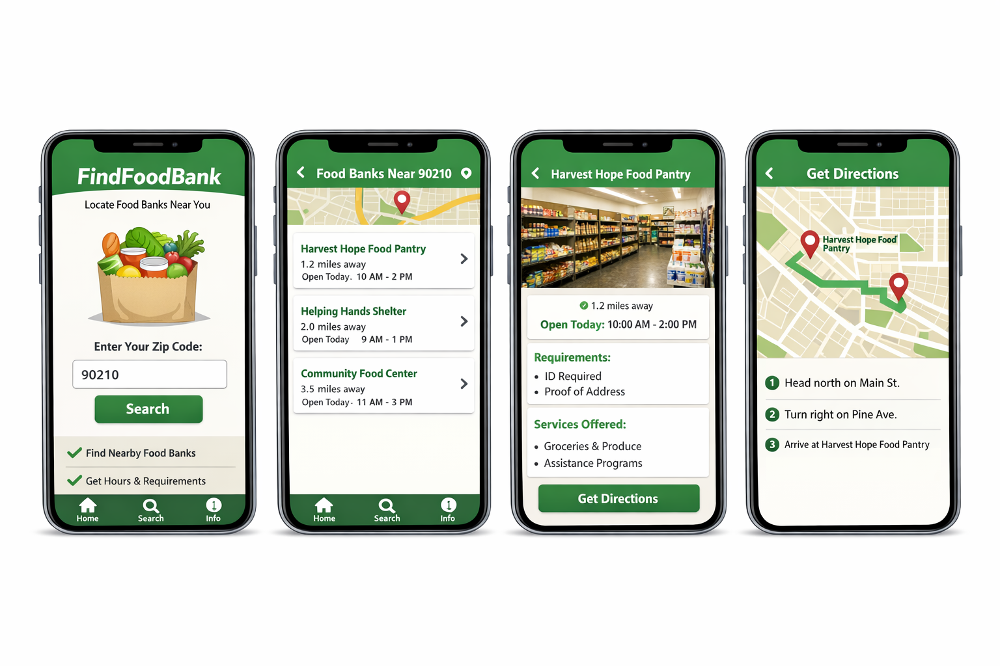

Application Prototype Overview
The FindFoodBank prototype demonstrates how users can quickly locate nearby food banks, view important details, and get directions using a simple and accessible interface.
User Flow
- User enters a ZIP code or allows location access
- App displays a list of nearby food banks
- User selects a food bank to view hours and requirements
- User receives directions to the selected location
Prototype Screens
The images below show example screens from the FindFoodBank application prototype, illustrating the main features and user experience.
Note: Prototype images are for demonstration purposes only.